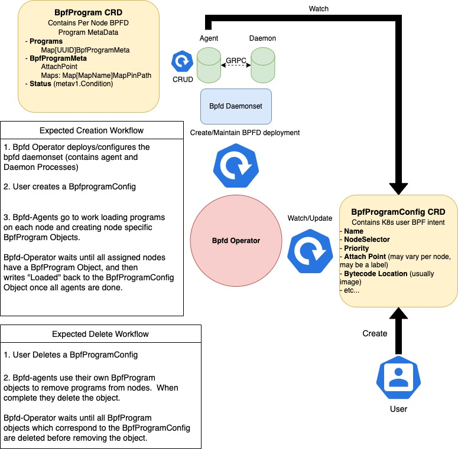

How to Deploy bpfd on Kubernetes
One of the key use cases for bpfd is to support the deployment of BPF programs in Kubernetes clusters. The simplest way to do this is to use the bpfd-operator. In this document, we provide an overview of using the bpfd-operator as well as the manual steps required to use bpfd with Kubernetes, in general, and OpenShift, in particular.
bpfd-operator Overview
The Bpfd-Operator can be used to deploy and manage bpfd within a Kubernetes cluster.

The bpfd-operator
repository houses
two main processes, the bpfd-agent and the bpfd-operator along with CRD api
definitions for BpfProgram and BpfProgramConfig Objects. In the below
sections we'll dive a bit deeper into the API and functionality of both
processes.
Deployment Options
Choose one of the install options described below, and then go to Verify the installation below to make sure it worked.
Quick Start with kind and the bpfd-operator
Using kind with the bpfd-operator is an easy way to spin up a local kind cluster and deploy bpfd.
Pre-requsites
- Install
git,make, andgo - Install Docker for your platform.
- We also recommend that you follow the Post-installation steps for Linux to allow your user to run Docker commands without root priviledges.
- Install kubctl and kind
- Installation Instructions
- clone the bpfd repository
The bpfd-operator was built utilizing some great tooling provided by the
operator-sdk library. A great first step in
understanding some of the functionality can be to cd into the
bpfd/bpfd-operator directory and run make help.
Deploy locally via KIND
After reviewing the possible make targets it's quick and easy to get bpfd deployed locally on your system via a KIND cluster with:
NOTE: You will need a spare 20G in your root partition to run
make run-on-kind, and it will take a while the first time you run it.
By default local image builds will be used for the kind deployment, however, the
container images used for bpfd,bpfd-agent, and bpfd-operator can also be
configured as follows.
BPFD_IMG=<your/image/url> BPFD_AGENT_IMG=<your/image/url> BPFD_OPERATOR_IMG=<your/image/url> make run-on-kind
To push and test out any local changes simply run:
To tear down the kind cluster, run:
The default name of the created cluster is bpfd-deployment.
To retrieve all the created kind clusters, use
Deploy To Openshift Cluster
First install cert-manager (if not already deployed) to the cluster with:
Then deploy the operator with one of the following two options:
1. Manually with Kustomize
Then to install manually with Kustomize and raw manifests simply run:
Which can then be cleaned up with:
2. Via the OLM bundle
The bpfd-operator can also be installed via it's OLM bundle.
First setup the namespace and certificates for the operator with:
Then use operator-sdk to install the bundle like so:
To clean everything up run:
followed by
Verify the installation
NOTE: The commands in this section were run on a local kind deployment.
If the bpfd-operator came up successfully you will see the bpfd-daemon and bpfd-operator pods running without errors:
kubectl get pods -n bpfd
NAME READY STATUS RESTARTS AGE
bpfd-daemon-6d4qm 2/2 Running 0 75m
bpfd-daemon-929tf 2/2 Running 0 75m
bpfd-daemon-ftpwn 2/2 Running 0 75m
bpfd-operator-685db895b7-9qqrs 2/2 Running 0 75m
To test the deployment, load one or both of the example programs.
NOTE: The example
BpfProgramConfigCRDs assume that the programs will be run oneth0, which is the default for the kind deployment. If you need to run the programs on a different interface, modifyinterfacein the associated file:
examples/go-xdp-counter/kubernetes-deployment/go-xdp-counter-bytecode.yaml, orexamples/go-tc-counter/kubernetes-deployment/go-tc-counter-bytecode.yaml
Load the example xdp kernel and user space programs:
kubectl create -f examples/go-xdp-counter/kubernetes-deployment/go-xdp-counter-bytecode.yaml
kubectl create -f examples/go-xdp-counter/kubernetes-deployment/go-xdp-counter.yaml
Load the example tc kernel and user space programs:
kubectl create -f examples/go-tc-counter/kubernetes-deployment/go-tc-counter-bytecode.yaml
kubectl create -f examples/go-tc-counter/kubernetes-deployment/go-tc-counter.yaml
Verify that they are loaded:
kubectl get pods -A
NAMESPACE NAME READY STATUS RESTARTS AGE
:
go-tc-counter go-tc-counter-ds-8rgfz 1/1 Running 0 13m
go-tc-counter go-tc-counter-ds-gfn8p 1/1 Running 0 13m
go-tc-counter go-tc-counter-ds-x6vkw 1/1 Running 0 13m
go-xdp-counter go-xdp-counter-ds-6px5b 1/1 Running 0 13m
go-xdp-counter go-xdp-counter-ds-ngbj2 1/1 Running 0 13m
go-xdp-counter go-xdp-counter-ds-rhkd4 1/1 Running 0 13m
:
You can look at the status field in the bpfprogramconfig to confirm that the
program has been loaded successfully:
kubectl get bpfprogramconfig
NAME AGE
go-tc-counter-example 19m
go-xdp-counter-example 19m
kubectl get bpfprogramconfig go-xdp-counter-example -o yaml
apiVersion: bpfd.io/v1alpha1
kind: BpfProgramConfig
metadata:
creationTimestamp: "2023-01-12T17:34:30Z"
finalizers:
- bpfd.io.operator/finalizer
generation: 1
labels:
app.kubernetes.io/name: bpfprogramconfig
name: go-xdp-counter-example
resourceVersion: "25382"
uid: 2abb3fdd-3712-4dbf-8530-d803012f4e91
spec:
attachpoint:
networkmultiattach:
direction: NONE
interface: eth0
priority: 55
bytecode: image://quay.io/bpfd-bytecode/go-xdp-counter:latest
name: stats
nodeselector: {}
type: XDP
status:
conditions:
- lastTransitionTime: "2023-01-12T17:34:30Z"
message: Waiting for BpfProgramConfig Object to be reconciled to all nodes
reason: ProgramsNotYetLoaded
status: "True"
type: NotYetLoaded
- lastTransitionTime: "2023-01-12T17:34:30Z"
message: bpfProgramReconciliation Succeeded on all nodes
reason: ReconcileSuccess
status: "True"
type: ReconcileSuccess
Both of these programs print statistics to their logs, which can be viewed as follows:
kubectl logs -n go-xdp-counter go-xdp-counter-ds-6px5b
2023/01/12 17:34:37 mapPath=/run/bpfd/fs/maps/56c8f178-4de2-4012-bec3-6d9abe29e195/xdp_stats_map
2023/01/12 17:34:40 4382 packets received
2023/01/12 17:34:40 60886324 bytes received
2023/01/12 17:34:43 4391 packets received
2023/01/12 17:34:43 60904814 bytes received
2023/01/12 17:34:46 4402 packets received
2023/01/12 17:34:46 60911249 bytes received
:
API Types Overview
BpfProgramConfig
The BpfProgramConfig CRD is the bpfd K8s API object most relevant to users and
can be used to understand clusterwide state for a BPF program. It's designed
to express how, and where BPF programs are to be deployed within a Kubernetes
cluster. An example BpfProgramConfig which loads a basic xdp-pass program to
all nodes can be seen below:
NOTE: Currently the bpfprogram's bytecode section-name MUST match the
spec.namefield in the BpfProgramConfig Object.
apiVersion: bpfd.io/v1alpha1
kind: BpfProgramConfig
metadata:
labels:
app.kubernetes.io/name: BpfProgramConfig
name: xdp-pass-all-nodes
spec:
## Must correspond to image section name
name: pass
type: XDP
# Select all nodes
nodeselector: {}
priority: 0
attachpoint:
interface: eth0
bytecode:
imageurl: quay.io/bpfd-bytecode/xdp_pass:latest
BpfProgram
The BpfProgram CRD is used internally by the bpfd-deployment to keep track of
per node bpfd state such as program UUIDs and map pin points, and to report node
specific errors back to the user. K8s users/controllers are only allowed to view
these objects, NOT create or edit them. Below is an example BpfProgram Object
which was automatically generated in response to the above BpfProgramConfig
Object.
apiVersion: bpfd.io/v1alpha1
kind: BpfProgram
metadata:
creationTimestamp: "2022-12-07T22:41:29Z"
finalizers:
- bpfd.io.agent/finalizer
generation: 2
labels:
owningConfig: xdp-pass-all-nodes
name: xdp-pass-all-nodes-bpfd-deployment-worker2
ownerReferences:
- apiVersion: bpfd.io/v1alpha1
blockOwnerDeletion: true
controller: true
kind: BpfProgramConfig
name: xdp-pass-all-nodes
uid: 6e3f5851-97b1-4772-906b-3ac69c6a4057
resourceVersion: "1506"
uid: 384d3d5c-e62b-4be3-9bf0-c6cf0e315acf
spec:
programs:
bdeac6d3-4128-464e-9161-6010684eca27:
attachpoint:
interface: eth0
maps: {}
status:
conditions:
- lastTransitionTime: "2022-12-07T22:41:30Z"
message: Successfully loaded BpfProgram
reason: bpfdLoaded
status: "True"
type: Loaded
Applications wishing to use bpfd to deploy/manage their BPF programs in
Kubernetes will make use of this object to find references to the bpfMap pin
points (spec.maps) in order to configure their BPF programs.
Kubectl Plugins
Still a work in progress.
There are two scripts to help retrieve the BpfProgramConfig and BpfProgram objects
in a summary format.
The BpfProgramConfig script uses kubectl with -o custom-columns and the BpfProgram
script uses kubectl with -o jsonpath.
Example of summary of BpfProgramConfigs:
kubectl bpfprogramconfigs
NAME TYPE SECNAME STATUS INTERFACE PRIORITY DIRECTION TRACEPOINT
go-tc-counter-example TC stats ReconcileSuccess eth0 55 INGRESS <none>
go-xdp-counter-example XDP stats ReconcileSuccess eth0 55 NONE <none>
xdp-pass-all-nodes XDP pass ReconcileSuccess eth0 60 NONE <none>
tracepoint-example TRACEPOINT hello ReconcileSuccess <none> <none> <none> sched/sched_switch
Example of summary of BpfPrograms:
kubectl bpfprograms
STATUS REASON NAME
IFACE PRI DIR TRACEPOINT
Loaded bpfdLoaded go-tc-counter-example-bpfd-deployment-control-plane
eth0 55 INGRESS
Loaded bpfdLoaded go-tc-counter-example-bpfd-deployment-worker
eth0 55 INGRESS
Loaded bpfdLoaded go-tc-counter-example-bpfd-deployment-worker2
eth0 55 INGRESS
Loaded bpfdLoaded go-xdp-counter-example-bpfd-deployment-control-plane
eth0 55 NONE
Loaded bpfdLoaded go-xdp-counter-example-bpfd-deployment-worker
eth0 55 NONE
Loaded bpfdLoaded go-xdp-counter-example-bpfd-deployment-worker2
eth0 55 NONE
Loaded bpfdLoaded xdp-pass-all-nodes-bpfd-deployment-control-plane
eth0 60 NONE
Loaded bpfdLoaded xdp-pass-all-nodes-bpfd-deployment-worker
eth0 60 NONE
Loaded bpfdLoaded xdp-pass-all-nodes-bpfd-deployment-worker2
eth0 60 NONE
To install the kubectl plugins, run:
The kubectl plugins will be deleted when uninstall is run:
NOTE:
./scripts/setup.sh uninstallremoves ALL files installed bybpfd, including any bpfd binaries and service files.
Controllers
The Bpfd-Operator performs a few major functions and houses two major
controllers the bpfd-agent and bpfd-operator.
bpfd-agent
The bpfd-agent controller is deployed alongside bpfd in a daemonset. It's main purpose is to watch user intent (in BpfProgramConfig Objects) and communicate with bpfd via a mTLS secured connection in order to translate the cluster-wide user-intent to per node state.
bpfd-operator
The bpfd-operator performs the following functionality:
- Create and Reconcile the bpfd daemonset (including both the
bpfdandbpfd-agentprocesses) so that no manual edits can be completed. - Report cluster wide state back the the user with each BpfProgramConfig's status field.
More useful commands
- Install Instances of Custom Resources:
- Build and push your bpfd-agent and bpd-operator container images to the
location specified by
BPFD_AGENT_IMGandBPFD_OPERATOR_IMG:
make build-images push-images BPFD_OPERATOR_IMG=<some-registry>/bpfd-operator:tag BPFD_AGENT_IMAGE=<some-registry>/bpfd-agent:tag
- Deploy the operator and agent to a cluster with the image specified by
BPFD_AGENT_IMGandBPFD_OPERATOR_IMG:
make deploy BPFD_OPERATOR_IMG=<some-registry>/bpfd-operator:tag BPFD_AGENT_IMAGE=<some-registry>/bpfd-agent:tag
Reinstall CRDs
To delete the CRDs from the cluster:
Deploy controller
Deploy bpfd-operator to the K8s cluster specified in ~/.kube/config:
Undeploy controller
Undeploy the controller from a vanilla K8s Deployment cluster:
Modifying the API definitions
If you are editing the API definitions, generate the manifests such as CRs or CRDs using: